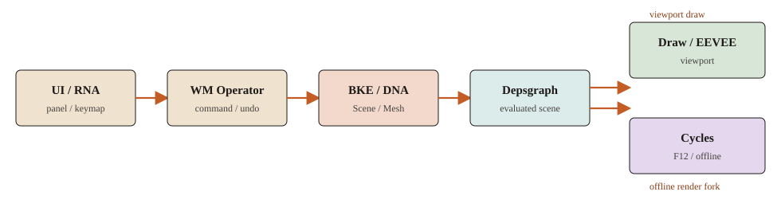

投影 5 · 地图级
求值之后如何分道
视口和 F12 共享求值结果，不共享像素后端。下面用符号把分道写清。函数级走读：渲染。

求值后的场景 → Draw / EEVEE 或 Cycles
flowchart TB evalDone[evaluated_scene] evalDone --> vp[DAG_EVAL_VIEWPORT] evalDone --> rnd[DAG_EVAL_RENDER] vp --> drw[DRW_draw_view] rnd --> re[RE_engine_render] drw --> eevee[EEVEE_or_Workbench] re --> cycles[Cycles_or_EEVEE_F12]
sequenceDiagram
participant V3D as view3d_draw_view
participant Drw as DRW_draw_view
participant Eng as ED_view3d_engine_type
participant Ot as RENDER_OT_render
participant Frame as RE_RenderFrame
participant Re as RE_engine_render
V3D->>Drw: expect evaluated graph
Drw->>Eng: pick Workbench EEVEE or external
Ot->>Frame: F12
Frame->>Re: RE_engines_find
两张求值图
视口图：DEG_graph_build_from_view_layer，模式 DAG_EVAL_VIEWPORT，Realtime 修改器、hide-viewport。F12 图：DEG_graph_build_for_render_pipeline / render_init_depsgraph，DAG_EVAL_RENDER。对外求值入口是 DEG_evaluate_on_refresh 和 DEG_evaluate_on_framechange，没有名为 DEG_evaluate 的函数。
视口
view3d_main_region_draw
view3d_draw_view
CTX_data_expect_evaluated_depsgraph
DRW_draw_view
ED_view3d_engine_type(scene, v3d->shading.type)
enable_engines / sync / draw
选中高亮、编辑线是 overlay，活在 DRWViewData，不是 RenderEngineType。
F12
RENDER_OT_render
RE_RenderFrame
RE_engine_render
RE_engines_find(scene.r.engine)
引擎若是 Cycles：BlenderSync::sync_data → 求值物体 → kernel。结果进图像缓冲，不是 Draw Manager 的 framebuffer。
材质为什么两边都能用
用户编辑的是同一份 shader node tree。EEVEE：GPU_material_from_nodetree（SHD_OUTPUT_EEVEE）。Cycles：intern/cycles/blender/shader.cpp 的 add_nodes（SHD_OUTPUT_CYCLES）。兼容是语义对齐，不是同一份机器码。
和建模的关系
渲染器看到的网格通常是求值后的：修改器已按当前图的模式应用。编辑模式的 BMesh 不会直接丢进 kernel。改拓扑必须先 EDBM_update 标脏（退出时才 BM_mesh_bm_to_me 写回 DNA）。
和邻居的边界
| 路 | 求值模式 | 出像素 |
|---|---|---|
| 视口 | DAG_EVAL_VIEWPORT | DRW_draw_view |
| F12 | DAG_EVAL_RENDER | RE_engine_render |
| Material 预览 | 视口图 | 常走 EEVEE（RE_USE_EEVEE_VIEWPORT） |
设计选择
分道点在求值之后。上面交互帧，下面路径追踪或光栅 F12。
常见误解
视口里的 Cycles 预览常常仍是 EEVEE。Rendered + Cycles 才走 external engine。
源码符号
DEG_evaluate_on_refresh · DRW_draw_view · RE_engine_render · Q151